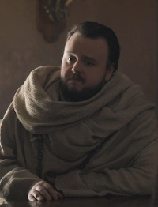

To understand the context of this problem, read the class #08 exercise sheet. After the deadline the problem stays open on Mooshak, but submissions no longer count towards your grade.
In this problem you should submit a function as described. Inside the function do not print anything that was not asked!

Samwell Tarly, the learned scholar from the Night's Watch, is studying ancient texts written in various cases. He has a list of words and wants to analyze them to gain insights about the writing styles of different authors. Specifically, Samwell is interested in counting how many words in the list are written on lowercase, uppercase or none.Write a function word_types(lst) that given a list of strings lst returns a tuple (lower,upper,other) where:
The following limits are guaranteed in all the test cases that will be given to your program:
| 1 ≤ |lst| ≤ 100 | number of words to consider |
You can also be assured that the length of each word will be at most 50 and that all words will be made only of letters (no other type of characters will appear).
Example Function Calls
print(word_types(["Winter","IS","coming","WALL","CASTLE"])) print(word_types(["stark","Lannister","TaRgArYeN", "ARRYN","tully"])) print(word_types(["Robb", "Sansa", "Arya", "Bran", "Rickon", "Jon"]))
Example Output
(1, 3, 1) (2, 1, 2) (0, 0, 6)